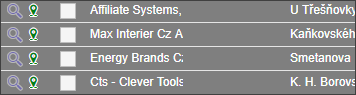
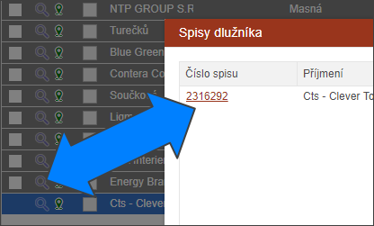

Proklik na spis
Pokud chce uživatel zjistit, které spisy je potřeba u adresy dlužníka řešit, může si kliknout na ikonu lupy v prvním sloupci.

Po kliknutím na ikonku u požadované adresy se otevře dialog, ve kterém jsou vypsány všechny spisy dlužníka na příslušné adrese.
